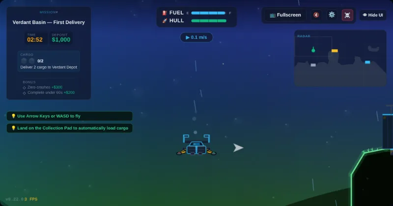
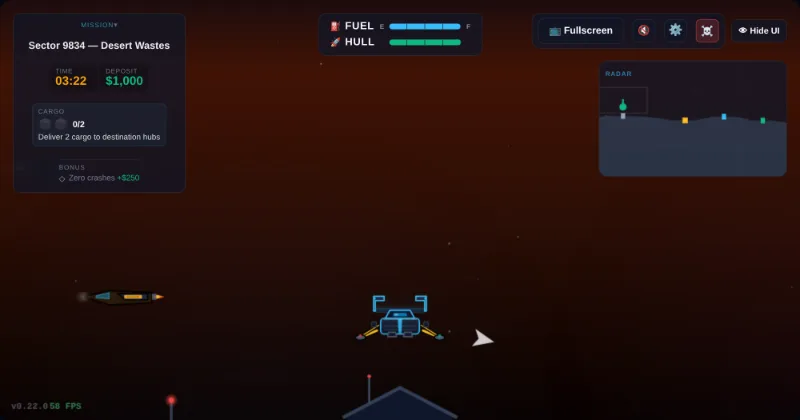
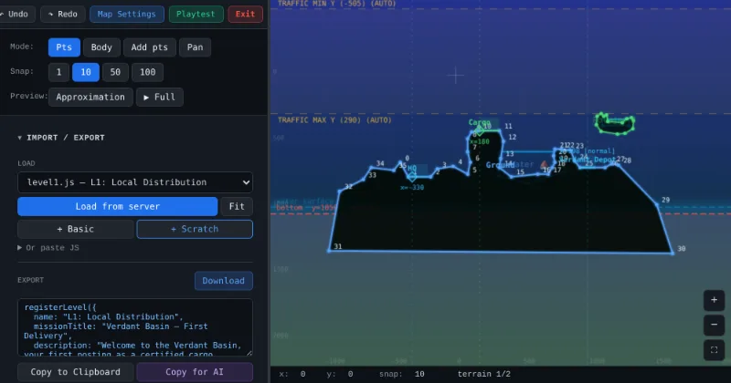
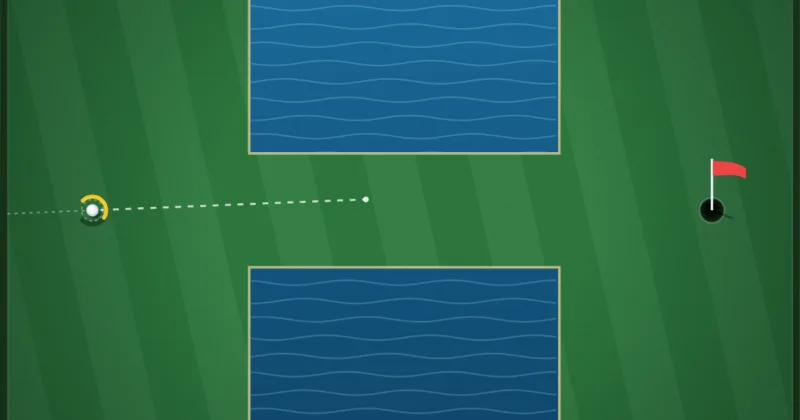
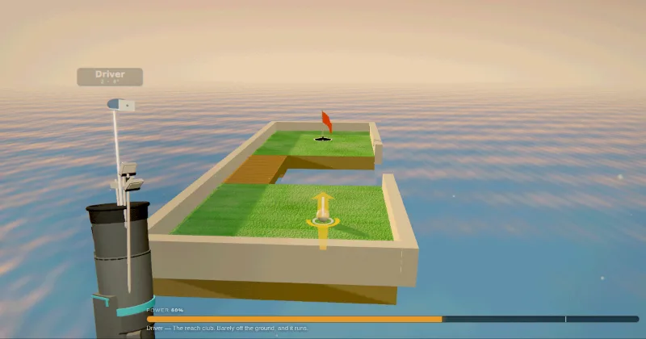
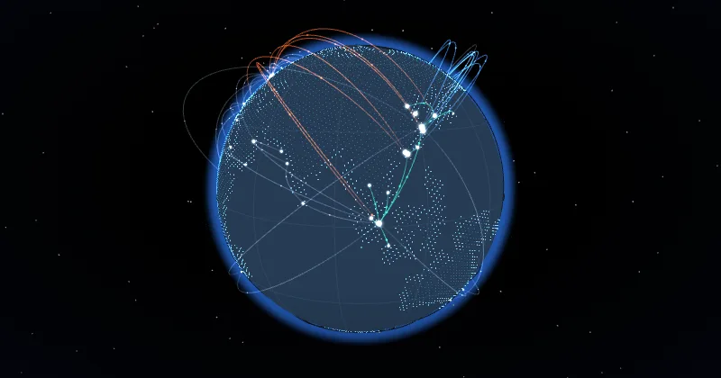
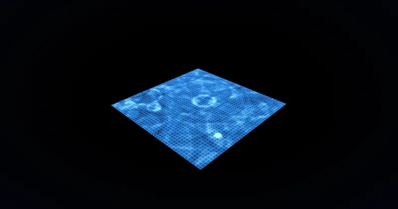
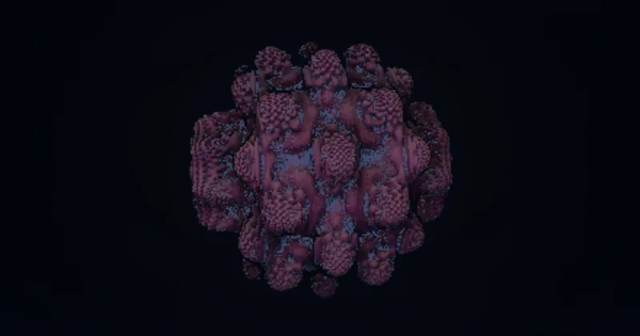
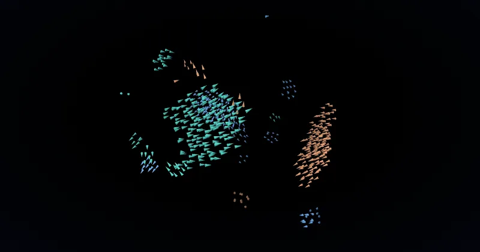

Fly your space truck and deliver space cargo in space! Includes a level editor with undo functionality.

2D Pocket Links Eighteen holes, seen from above. Bunkers, water, ice, bumpers and gates that will not wait for you — plus a hole editor that checks its own work. Best Round: —
3D Loft Links 3D Twelve courses in four kinds: mini golf over ramps, ledges and water carries; crazy golf past windmill blades, pinball bumpers and clockwork; adventure golf on ice, travelators and pipes; and the long game over parkland, heath and an open links of rolling dunes with nothing but white stakes to keep you honest. Each hole under weather of its own, and five clubs to get past them. Best Round: —I implement supply chain planning solutions. Have a look at my CV or LinkedIn if you're curious.
AI changed how much one person can build on their own, so I started testing that in my spare time. A lander game with its own physics engine, a logistics sim, a couple of calculators I actually use. Mostly from my phone, with Claude and AntiGravity.




Eight interactive 3D visualizations: world trade on a globe, this site drawn as a city, three flocks nobody steers, a fractal with no mesh, and real water. Every one has controls.
Overview of my background, education, and skills in logistics and software development.